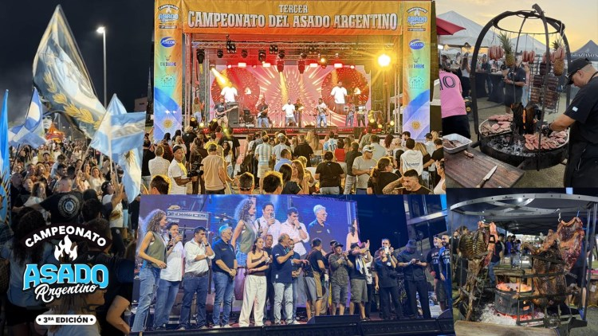

El Campeonato del Asado Argentino regresó con una celebración multitudinaria

Más de 7.000 personas participaron de la tercera edición del Campeonato del Asado Argentino, que volvió a Doral Central Park después del receso impuesto por la pandemia.
La propuesta combinó degustaciones, actividades infantiles, fogones encendidos, opciones gourmet y música en vivo. El centro de la celebración volvió a ser la competencia de asadores, evaluada por un jurado de especialistas.
Pablo Valenzuela obtuvo el primer puesto y Pedro Siciliano fue reconocido con el segundo lugar. Ambos representaron la técnica, la pasión y la tradición que convierten al asado en uno de los grandes rituales de encuentro de la comunidad argentina.
La programación artística acompañó toda la jornada con Fátima Flórez, Michel Puche, Dr. Calavera, Ina Peralta, Richard Laffite y el cierre de La Previa. También participó “Gran Pueblo Argentino”, la batucada de la hinchada de la selección argentina en Estados Unidos.
La edición contó con el apoyo de ARCOR, GW Store y Prison Pals, además de la participación de decenas de marcas vinculadas con la gastronomía, el vino, el arte y la cultura. La producción agradeció especialmente a la Ciudad de Doral y a las autoridades y organizaciones que acompañaron el regreso del encuentro.
Información e imagen adaptadas de Prensario Música, publicación del 26 de noviembre de 2025.